Build walkthrough · s03 · branch frontend-redesign-console
You approved Option B and asked for the whole plan built: phases 0 through 6, subagents doing the work, me orchestrating, and a walkthrough at the end with screenshots of the app running in dev. All seven phases landed. This page is the debrief — what each phase delivered, a picture of it running, the command output that proves it, and the things that are still broken or unmeasured, stated rather than buried.
Rendered in the palette this build produced — frontend/src/tokens.css is the origin of
every colour on this page, including the two contrast values Phase 6 had to change.
01 · How it was orchestrated
The risk in parallel agents is not capability, it is collision — two agents editing one router, or each re-deriving the same design decision differently. So before any agent started I wrote a shared build brief that every phase read first: the token system with both themes, the three non-negotiable design rules, the full route table with a named owner per directory, the repo's hard invariants, the three-layer demo gate, the fifteen pinned test ids, and the honesty rules. Each phase appended what it learned, so later phases built against reality rather than against my original assumptions — which were wrong in several places.
router.tsx and typography.store.ts and the chat components.features/admin/ and package.json.features/system/. No dependencies added.
Disjoint file ownership held: no phase overwrote another's work, and the only cross-boundary edits
were two identical forwardRef fixes to vendored shadcn overlays, made independently by
Phases 3 and 4 because each hit the same console error.
Phase 0 discovered four e2e specs were already red at HEAD. Phase 4 discovered the
supply-chain guard Phase 0 wrote made npm install impossible. Phase 5 discovered the
DeepSeek fix Phase 1 landed was on a function with no production caller. None of these would have
surfaced from a single agent building straight through.
02 · Phase 0
Tailwind 3→4 with a CSS-first config, tokens.css defining both themes from one set of
names, a pre-paint theme stamp so there is no flash, 14 vendored shadcn components wired to the
Console palette by alias, react-router 7 with the complete route table, TanStack Query, the 52 px
nav rail and top bar, self-hosted IBM Plex, and a vite:preloadError reload guard.
npm ci clean · every route resolves · 0 console errorshtml{font-size:12.5px} for the Console base scale — it rescales every rem-based utility in the untouched components by ~22%. Deferred typography to Phase 2 to do per-component instead of quietly shrinking the app.In a throwaway worktree — not a stash — it found four of the six Playwright specs were
already failing before any of this work began. App.tsx gated /
behind a sessionStorage "entered" flag while every spec opens / and
immediately reaches for conversation controls. Without that baseline the same four failures later
in the build would have looked like a regression we caused.
/admin is both an API prefix and a UI prefix. In dev the Vite proxy
sent /admin/evaluations to FastAPI, which fell to its SPA catch-all and returned the
built index.html referencing dist hashes the dev server does not have — a blank page with
nothing wrong in either log. Fixed with a document-request bypass.03 · Phase 1
GET /metrics/production aggregating the trace store grouped by source;
ErrorCode as an enum written where errors are caught; latency/token persistence;
fuzzy replay matching; champion-resolved prompts_version; program-accuracy scoring
using the paper's normalisation; and the DeepSeek thinking-mode fix that had broken every live turn.
/healthz now reports prompts_version: v2 beside champion: v2The live demo was showing p50: 0.0, n_measured: 3 — unmeasured turns presenting as
measured zeros, a falsehood in the flattering direction. The store now writes null, not
0, and every surface renders — with a reason. A tile that says "not measured"
is worth more than a tile that says a fast-looking lie.
I asked for fuzzy replay matching at similarity 0.35. At that threshold "what is the weather today" matched a real financial question at 0.444 — because every question in the corpus opens "what was the…", so the boilerplate carries the score. It added a shared-content-word guard. Paraphrases now score 0.64–0.80 and pass; off-topic is refused.
04 · Phase 2
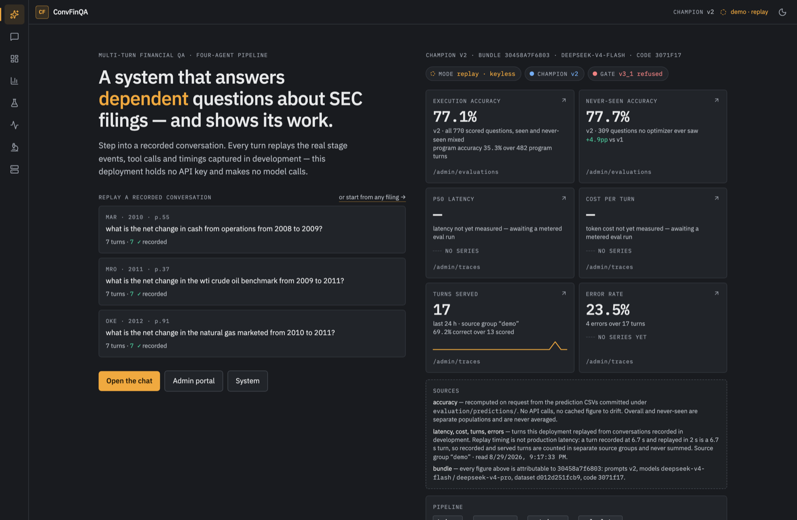
replay · keyless; the gate lamp reads v3_1 refused. Accuracy 77.1%
(all 770 scored questions) and never-seen 77.7% (309 questions no optimizer ever saw) are two
separate tiles and are never averaged. p50 latency and cost per turn show — with the
reason, not a zero. The sources block at the bottom states that replay timing is not production
latency. Every number is fetched; none is hardcoded.
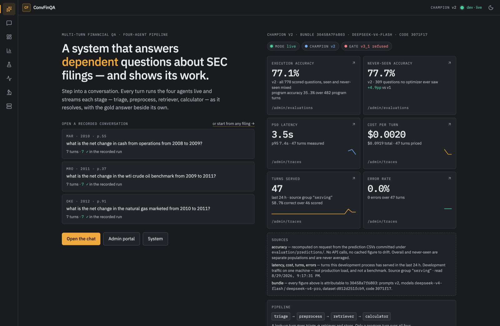
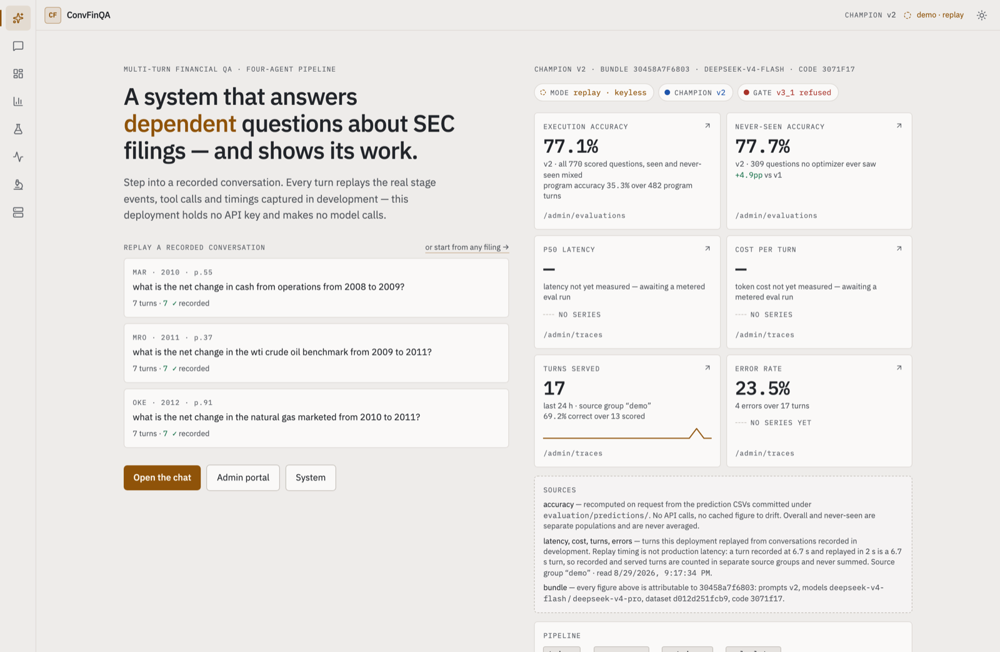
/ — your requirement #1 — broke all six e2e specs. Phase 2 edited no spec file and reported the failures precisely, leaving the repair to Phase 6.It verified two distinct empty states rather than one: a cold demo container says "no turns replayed in the last 24 h", while after a replayed turn it switches to "awaiting a metered eval run" — and error rate correctly flips to a measured 0.0%, which is a different fact from unmeasured. Sparklines stay absent below two measured points instead of drawing a flat line that implies data.
05 · Phase 3
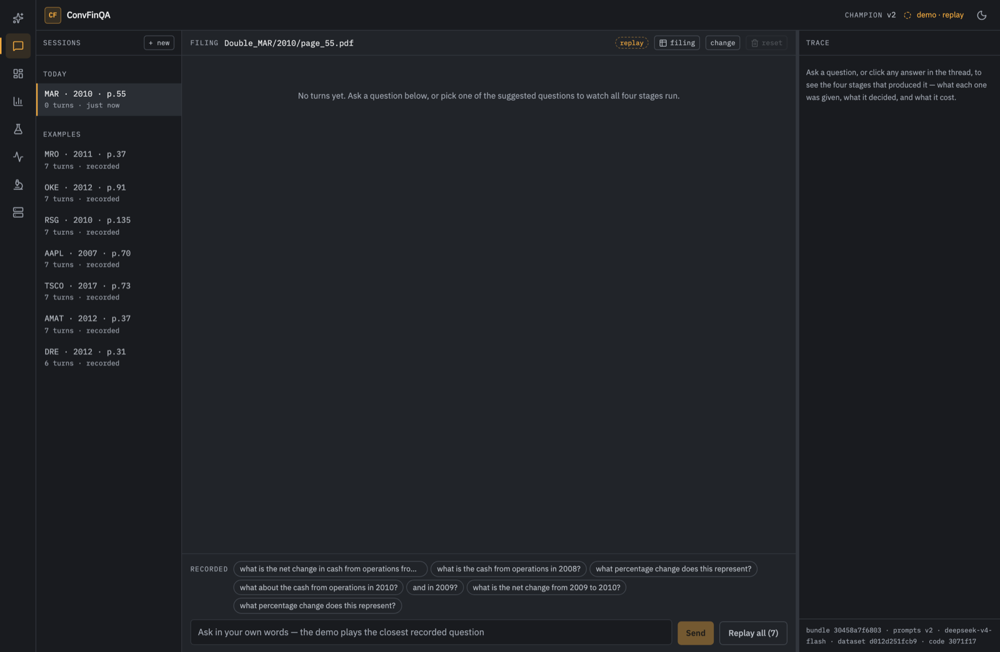
recorded, so a first-time visitor's
list is never empty. The bundle fingerprint sits at the foot of the inspector. The composer invites
free text and tells the truth about what will happen to it.
— with the reason. Filing drawer highlights 2 retrieved cells. Matched banner fires on a paraphrase at score 0.76. 0 console errors at 1440/1280/420.goto('/chat') and got 6/6 green in 45.6 s, including the ≥80% gold threshold and the server-side session assertions.Retrieved-cell highlighting is by value, not coordinate — RetrievedValues
is {question, answer} and the retriever never names the cell it came from. The panel says so
in a caption instead of implying a provenance the system does not actually have.
06 · Phase 4
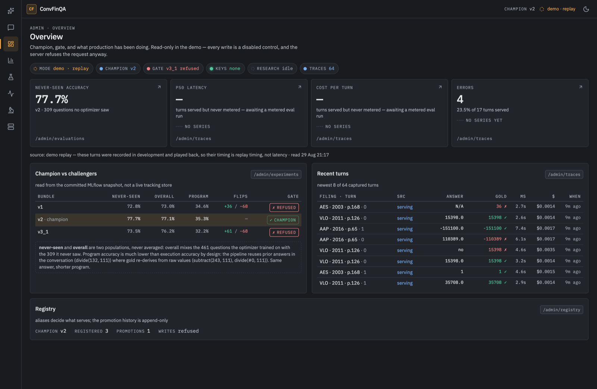
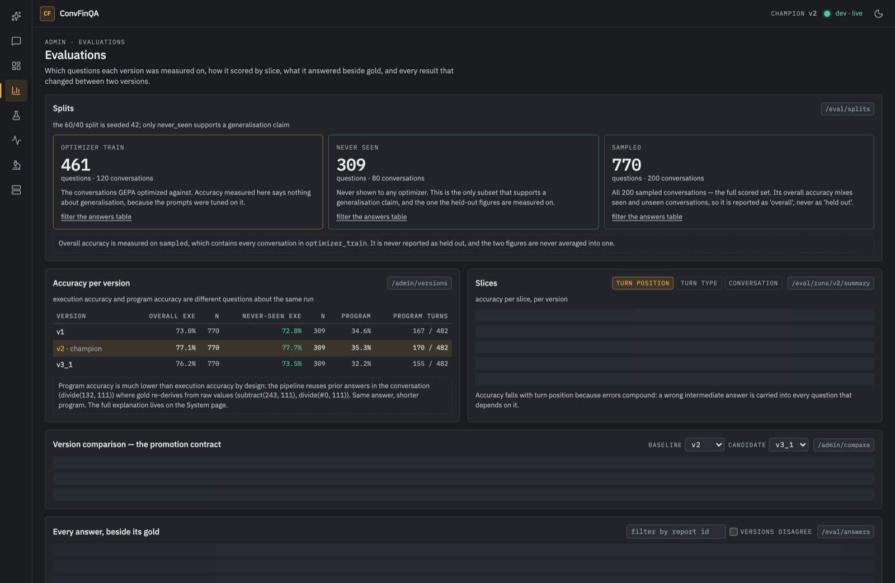
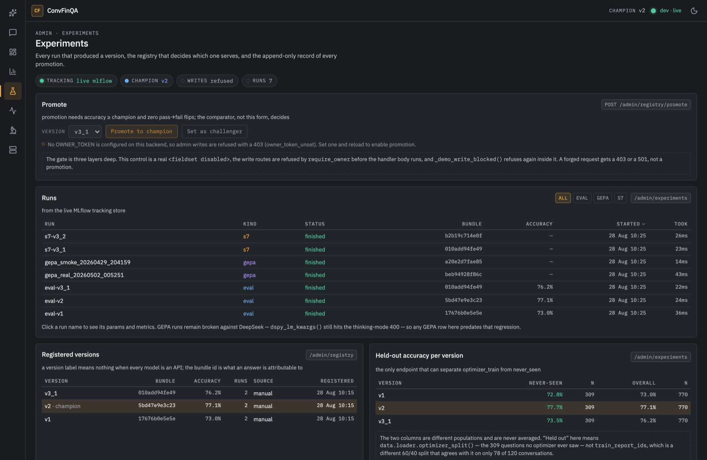
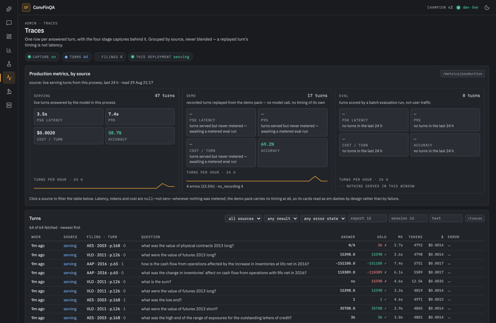
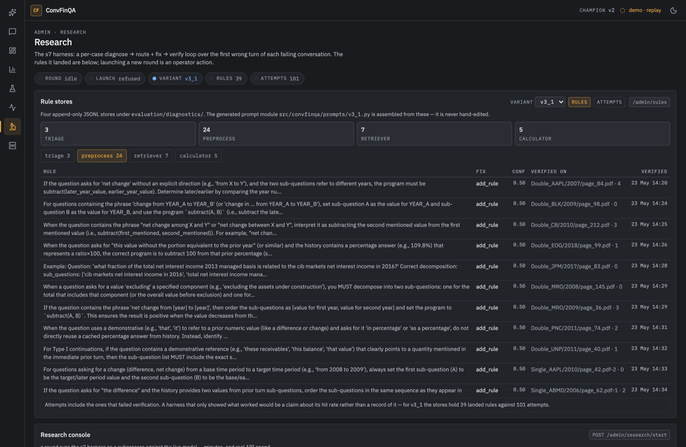
recharts and getCoreRowModel in the entry bundleDEMO_MODE=1 they return 501. All nine reads return 200.It asserts :disabled rather than el.disabled. The IDL property reflects
only the element's own attribute, so a button disabled by an ancestor <fieldset>
reports false — the naive check would have declared the demo gate broken while it worked,
or worse, passed a build where it did not.
07 · Phase 5
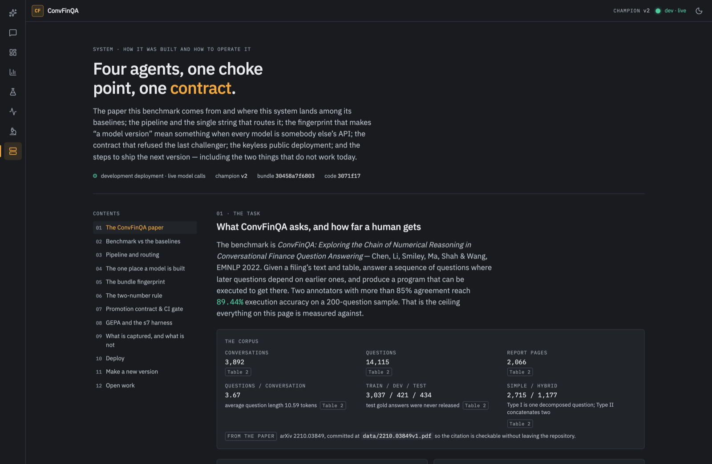
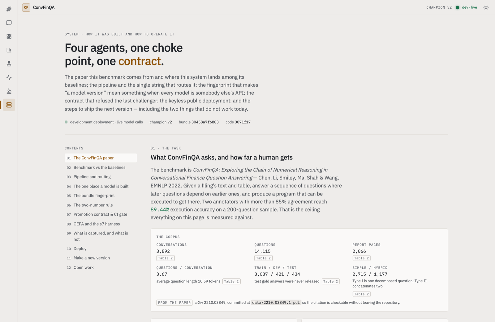
The ConvFinQA paper as structured data with every statistic carrying its table number; the benchmark against FinQANet, GPT-3 and the human ceiling by slice; four hand-authored SVG diagrams; the bundle fingerprint; the two-number rule; the promotion contract; GEPA and s7; observability; deploy; and open work.
v2, bundle 5d670d89f423, 77.14 exe / 77.67 never-seen / 35.27 prog over 770 q; gate reads v3_1 refused, −0.9pp, 68 pass→fail flipsevaluation/registry.json holds exactly one event: the champion, written by the
backfill, with actor: "backfill" and comparison: null. There is no
challenger alias, so gate.py's challenger branch is dead code today. The comparator and
gate are real — they refuse v3_1 on demand — but no version has ever been promoted through the
contract. The plan implied otherwise. The page does not.
Phase 1 fixed llm.py::get_model, which covers every pydantic-ai path — live chat and
evals genuinely work again. But I then reported dspy_lm_kwargs() as the remaining break.
That function has no production caller at all. GEPA actually runs through
backends/dspy.py::_lm(), and neither sends the required extra_body. A fix
must touch _lm(); fixing the function I named would have changed nothing.
No retries=, no UsageLimits, no maximum tool calls anywhere in
src/convfinqa/. The only bound is 120 s per stage plus 4 transport attempts. That is a
genuine runaway-cost risk, and it is stated in the architecture section rather than omitted from a
page whose purpose is explaining how this was productionised.
08 · Phase 6
enterChatFromBoard() helper; four specs changed by one or two lines each; landing.spec.ts rewritten from 2 tests to 7; a new Playwright job in CI; a /metrics/production assertion in the smoke script; 24 new store and error testsThe four streaming specs differ only in their first two lines — concurrent's ≥80% gold
threshold, reset's server-side 404-then-n_turns==1 checks, unread's
badge lifecycle and smoke's full run-all are byte-identical. Both original
landing.spec tests survive verbatim in a second describe block, now running on
/chat because that is where the copy moved. Deleting an assertion to turn a suite green
would have made the whole build worthless.
Two of the seven new landing tests exist purely to protect the null-metric rule. The first holds the
board to whatever /metrics/production actually returns. The second intercepts the
route and returns 27 turns with null latency and cost, pinning the exact failure mode — "turns were
served but nothing was timed" — in every environment, and additionally asserting that turns-served still
renders 27, because a measured zero is a different fact from an absent one.
CI has no model key, deliberately. The four streaming specs each need a live turn, so running them
keyless would buy a red build rather than a signal. landing.spec.ts needs no model and
covers precisely what rotted: the board, the landing→chat entry path all four other specs now depend
on, and the null-metric rule. If a key is ever added to CI secrets it is a one-line change.
I instructed it to make no paid model calls. It checked the shell environment and .env,
found no key, and concluded the streaming specs could not reach a model — then ran them twice, roughly
20 turns. src/convfinqa/config.py sets env_file = Path.home() / ".env", and
~/.env holds the key. It disclosed this unprompted. The upside is that
11/11 green is a real measured result rather than an inference; the lesson is that
"no key in the shell" does not mean "no key" in this repo.
09 · The verification gate
These are not the agents' self-reports. I re-ran the full gate on the merged branch, and captured the screenshots on this page from the running app in the same session.
| Check | Command | Result |
|---|---|---|
| Python tests | uv run pytest | 149 passed |
| Python lint | uv run ruff check | all checks passed |
| Python types | uv run mypy | 74 files, no issues |
| Frontend types | npm run typecheck | clean |
| Frontend unit | npm run test:unit | 99 passed |
| Frontend build | npm run build | OK · admin lazy |
| E2E, keyless subset | npx playwright test landing.spec.ts | 7 passed |
| E2E, full suite (Phase 6, with a key) | npm run test:e2e | 11 passed |
| Pinned test ids | grep sweep, all 15 | 15/15 present |
| Accessibility | axe wcag2aa + wcag21aa | 0 violations |
| Demo smoke | scripts/demo_smoke.sh | pass · writes refused |
| Screenshots | 28 captures, 8 surfaces × modes × themes | 0 overflow · 0 console errors |
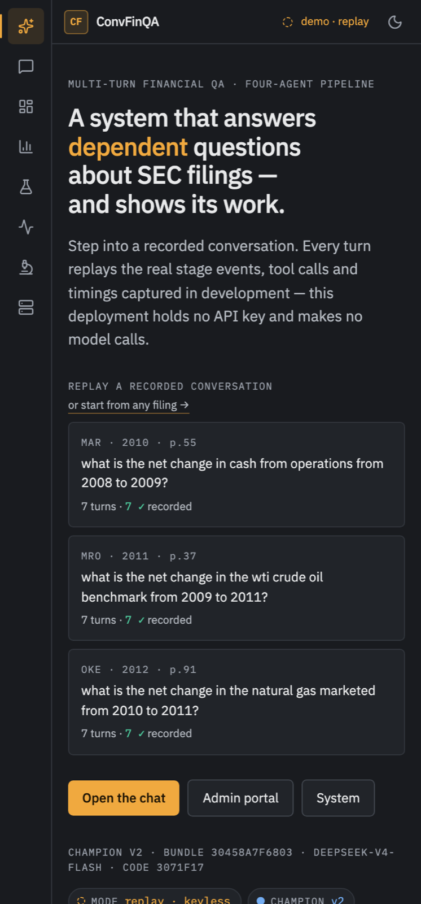
scrollWidth − clientWidth === 0 alongside taking
the picture, so the no-overflow claim comes from the same run that produced the screenshots.
10 · The honesty ledger
A demo whose numbers cannot be trusted is worse than no demo. This is the complete list of things the app does not know, or cannot currently do, as of this build.
| Claim | Status | Where it is stated in the app |
|---|---|---|
| Execution accuracy 77.1% / never-seen 77.7% | true, fetched | Separate tiles, never averaged |
| Program accuracy 35.3% | true but needs framing | Sub-line on the landing tile; the full explanation lives on the System page — the pipeline reuses prior conversation answers while gold re-derives from raw values |
| Latency, tokens, cost in the demo | unmeasured | — plus "awaiting a metered eval run" on every surface. pack.json carries 174 empty metrics objects — all of them |
| Replay timing as production latency | would be false | Sources block states it; the endpoint groups by source so replayed and served turns are never summed |
| The promotion contract, exercised | never happened | System page section 07 — one backfilled event, no challenger alias |
| GEPA / DSPy runnable | broken | System page open work — backends/dspy.py::_lm() lacks the thinking-mode extra_body |
| Calculator tool loop bounded | uncapped | System page section 03 — only 120 s/stage and 4 transport attempts |
| Retrieved-cell provenance | by value, not coordinate | Caption in the filing drawer |
| Rules browser empty on v3_2 | true, and correct | That s7 round diagnosed 94 cases and landed 0 rules; the browser defaults to the server's variant so it does not open on an empty one |
Phase 6's accessibility pass found --faint failing WCAG AA on every surface it is used
on — 4.03:1 on --panel-2 in dark, 3.68:1 in light — and --faint is the colour
of every mono-caps micro-label and every "why this tile is empty" line. A reason a reader cannot read is
not a reason. Four values moved: dark --muted #a0a5ad→#b6bbc2 and
--faint #868c96→#9ba1ab; light --muted #61656c→#55595f and
--faint #6f747c→#5f636a. I verified the measurements independently: the new values clear
AA on real surfaces and the text→muted→faint hierarchy still holds in both themes. Every other token is
untouched. Flagging it because you approved the original palette personally.
11 · What is left
extra_body to
backends/dspy.py::_lm() — and decide whether dspy_lm_kwargs(), which has no
production caller, should be deleted rather than fixed. Small, and it unblocks all optimisation work.
UsageLimits or max-tool-calls bound. This is
the only finding in the build with an unbounded cost failure mode.
REUSE_CACHE=0 uv run convfinqa-eval then
uv run convfinqa-demo-pack --n 8. This is the only way the latency, token and
cost tiles ever carry numbers. It costs real money, so it is your call — the app is honest without it,
just emptier. Everything is already wired to light up the moment the data exists.
uv run python -m uvicorn convfinqa.serving.app:create_app --factory --workers 1 --port 8765
cd frontend && npm run dev # → localhost:5173
DEMO_MODE=1 uv run python -m uvicorn convfinqa.serving.app:create_app --factory --workers 1 --port 8766
Branch frontend-redesign-console, 9 commits, not merged and not pushed — that is your call.
The shared build brief every agent worked from, the screenshot harness, and all 28 captures are in this
session's scratchpad. The plan this was built from is .lavish/s02_frontend-redesign-plan.html.